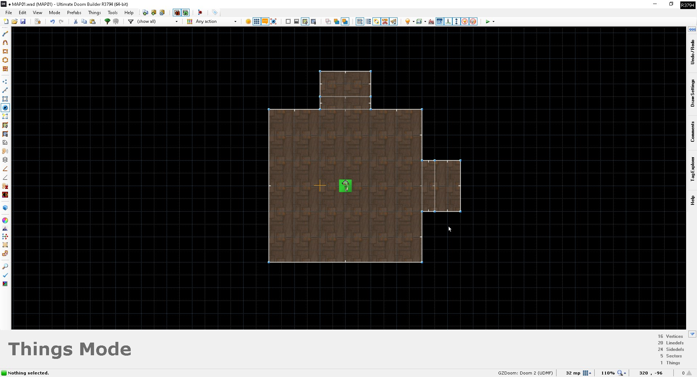
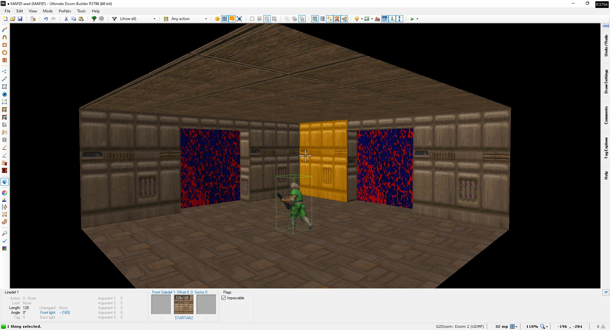
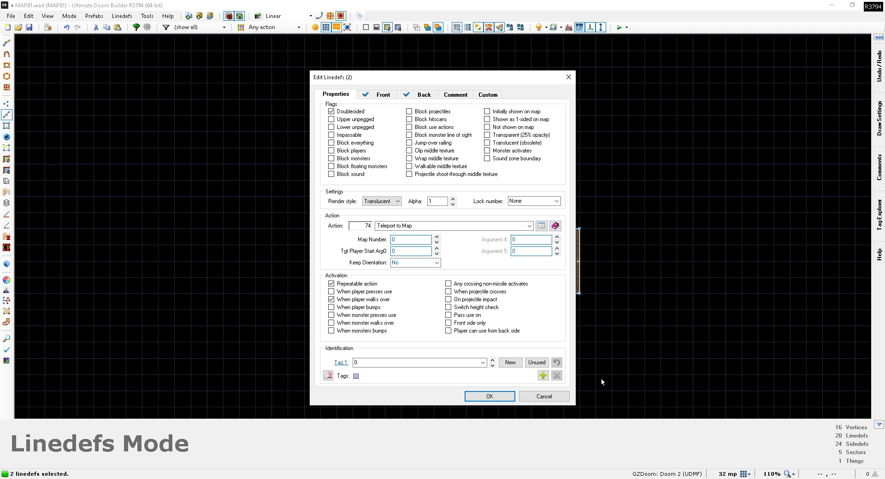
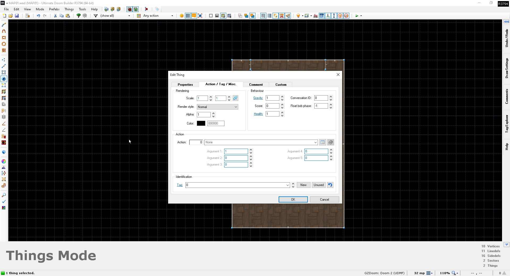
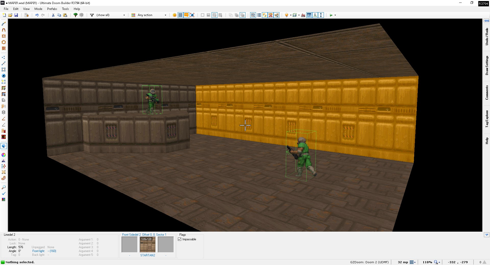

In this tutorial, I'll cover the basics of setting up a hub system a la Hexen.
To demonstrate the feature, I made a new map in GZDoom/UDMF format and threw together this small and ugly room with two FIREBLU "portals"
in UDB. (You don't necessarily have to use GZDoom/UDMF format - the feature is supported by some other source ports, as well as Hexen
format.) The lines with the FIREBLU texture on them will act as the lines that teleport us to different maps.


Now, the line special you'll want to use is line action 74. That will tell the engine that we want the acting line to
teleport us to another map. Set your map number argument and line activation arguments as desired. (I left the map number argument at 0 in this
example, but you'll want to replace it with the proper number, as specified by the map's levelnum property in your MAPINFO file).
For line activation, it's recommended that you tick the "repeatable action" box; if you don't, the teleport will only work once. And when I say once,
I mean it'll only work once in an entire playthrough.

You may wonder what the meaning of the second argument (target player start arg0) is. That's used when there are multiple different locations
in a map where we want the player to teleport into the map from. If there's only one player start per player in the map, the argument can be left
at 0. But what if you want the player to be able to teleport to a different location in the map from another map? Then you'll want to place another
player start and change its arg0. It's important to note that arg0 does NOT refer to the thing tag! Rather, it refers to the first
argument of its action special. Without an action special, it would otherwise be ignored by the engine, but for player starts, it can be changed to
denote a different target location than the player's default spawn point. In UDMF format, you'll find it in the "Action / Tag / Misc." tab as
"Argument 1".

In the map from which you want the player to teleport to the new location, you would then change the target player start arg0
argument to the value of the arg0 you gave to the player start.
In this example map I made, there are two player starts. One is on the ground, the other is on a ledge which the player wouldn't reach normally. The
player start on the ledge has an arg0 of 1, while the other one has an arg0 of 0. If I wanted the player to teleport onto the ledge from another map,
I'd look for the line I want to act as the "portal" and change the second argument of its line action to 1.

That concludes this tutorial on Hexen-style hub systems.